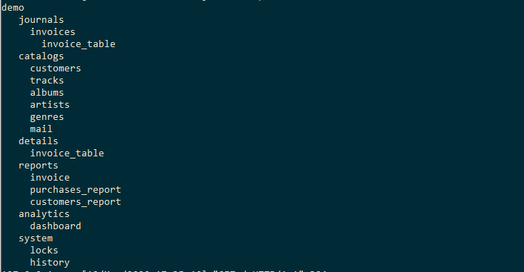

Jam.py documentation
The task tree¶
Jam.py server application creates a server task, containing a task tree, based on the information in the admin.sqlite database, which stores the project structure and code created by the developer in the AppBuilder.
The client task¶
When the browser loads jam.js library it creates an empty client task object. After the document is loaded the client task loads itself from the server task object.
If we run the Demo application and open the browser web console, and enter:
> task
> Task {owner: undefined, item_name: 'demo', item_caption: 'Jam.py demo', visible: null, ID: 1, ...}
The task, on the client, is a global object and is available in all client modules. It represents a tree. Each item of the tree can own other items:
> task.items
(6) [Group, Group, Group, Group, Group, Group]
0: Group {owner: Task, item_name: 'journals', item_caption: 'Journals', visible: true, ID: 3, ...}
1: Group {owner: Task, item_name: 'catalogs', item_caption: 'Catalogs', visible: true, ID: 2, ...}
2: Group {owner: Task, item_name: 'details', item_caption: 'Details', visible: false, ID: 4, ...}
3: Group {owner: Task, item_name: 'reports', item_caption: 'Reports', visible: true, ID: 5, ...}
4: Group {owner: Task, item_name: 'analytics', item_caption: 'Analytics', visible: true, ID: 23, ...}
5: Group {owner: Task, item_name: 'system', item_caption: 'System', visible: false, ID: 26, ...}
length: 6
__proto__: Array(0)
and so on recursively:
> task.items[1].items
(6) [Item, Item, Item, Item, Item, Item]
0: Item {owner: Group, item_name: 'customers', item_caption: 'Customers', visible: true, ID: 10, ...}
1: Item {owner: Group, item_name: 'tracks', item_caption: 'Tracks', visible: true, ID: 15, ...}
2: Item {owner: Group, item_name: 'albums', item_caption: 'Albums', visible: true, ID: 12, ...}
3: Item {owner: Group, item_name: 'artists', item_caption: 'Artists', visible: true, ID: 11, ...}
4: Item {owner: Group, item_name: 'genres', item_caption: 'Genres', visible: true, ID: 13, ...}
5: Item {owner: Group, item_name: 'mail', item_caption: 'Mail', visible: false, ID: 25, ...}
length: 6
__proto__: Array(0)
All items are derived from the common ancestor class - AbstractItem.
Each item is an attribute of its owner.
> task
Task {owner: undefined, item_name: "demo", item_caption: "Jam.py demo", visible: null, ID: 1, ...}
> task.catalogs
Group {owner: Task, item_name: "catalogs", item_caption: "Catalogs", visible: true, ID: 2, ...}
> task.catalogs.customers
Item {owner: Group, item_name: "customers", item_caption: "Customers", visible: true, ID: 10, ...}
Items that are owned by groups are also attributes of the task - they must to have unique names.
> task.customers
Item {owner: Group, item_name: "customers", item_caption: "Customers", visible: true, ID: 10, ...}
To get the owner of the item, use its owner attribute.
> task.customers.owner
Group {owner: Task, item_name: "catalogs", item_caption: "Catalogs", visible: true, ID: 2, ...}
> task.catalogs.owner
Task {owner: undefined, item_name: "demo", item_caption: "Jam.py demo", visible: null, ID: 1, ...}
To get the task to which the item belongs, use its task attribute.
> task.customers.task
Task {owner: undefined, item_name: "demo", item_caption: "Jam.py demo", visible: null, ID: 1, ...}
> task.journals.task
Task {owner: undefined, item_name: "demo", item_caption: "Jam.py demo", visible: null, ID: 1, ...}
Each item of the tree has a lot of attributes and methods.
> task.customers.view() // Modal customer view form is start up.
The server task¶
Let’s demonstrate the task on the server. The on_created event is triggered when the task tree is created, or rebuilt if it has changed.
print (task.item_name)
for group in task.items:
print (' ', group.item_name)
for item in group.items:
print (' ', item.item_name)
for detail in item.items:
print (' ', detail.item_name)
Result we can see on the our server console:
The task is not global object in the server module. But usually it is passed as a parameter to the functions and event handlers of the module, and knowing this item we can get access to any other item of the tree.
In addition, it is possible to create copies of the items associated with the database table.
cust_b = task.customers.copy()
cust_b.set_where({last_name__startwith: 'b'})
cust_b.view()
These copies are not included in the task tree and are deleted by the garbage collector when they are no longer used, but you can create a task attribute that references it.